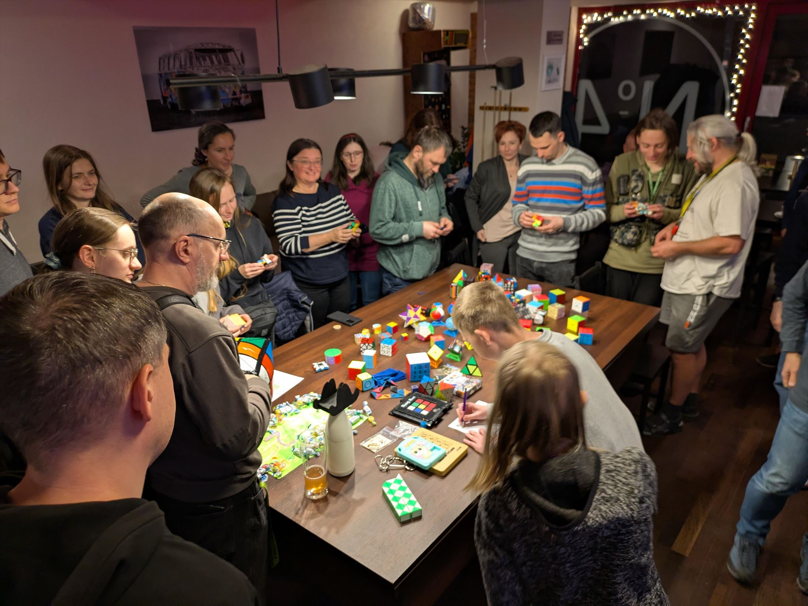
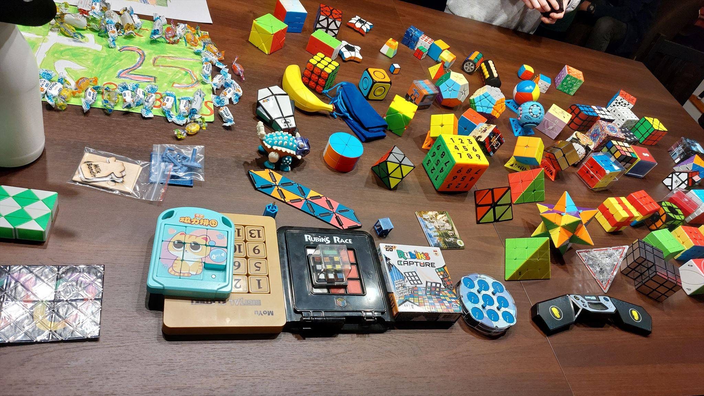
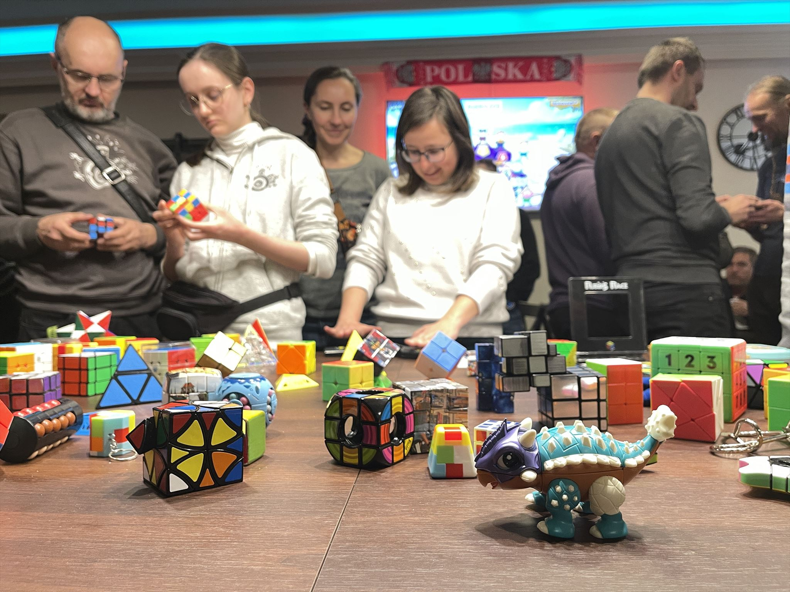
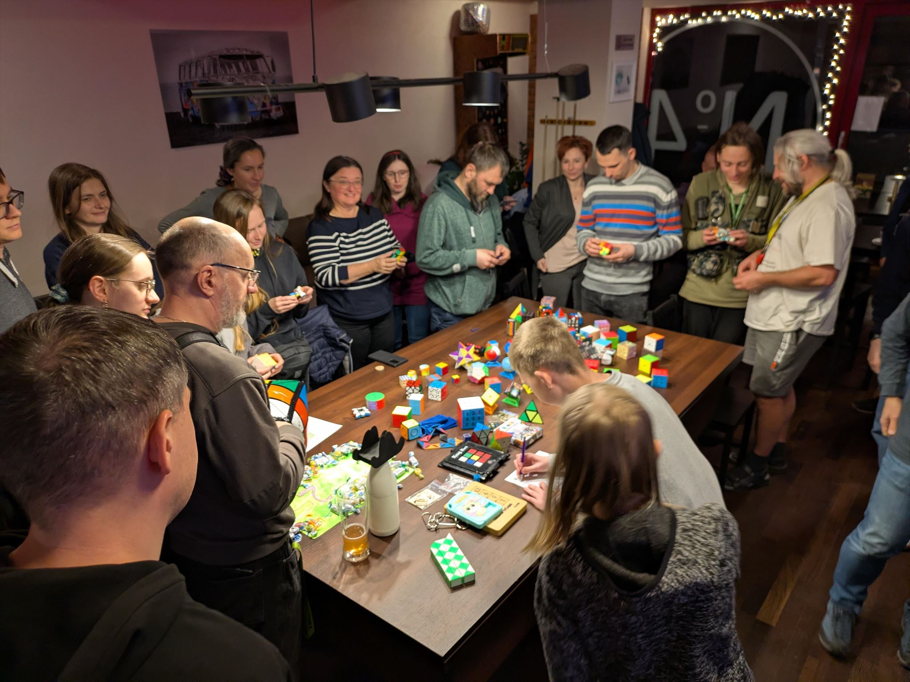
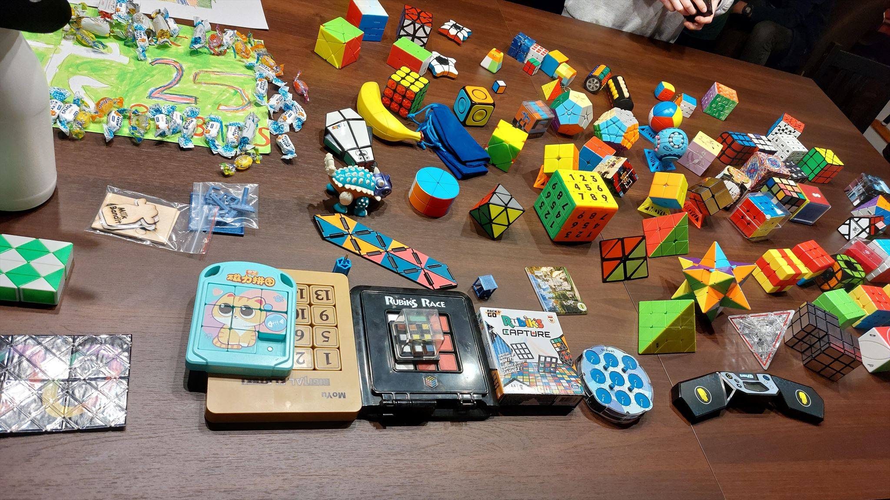
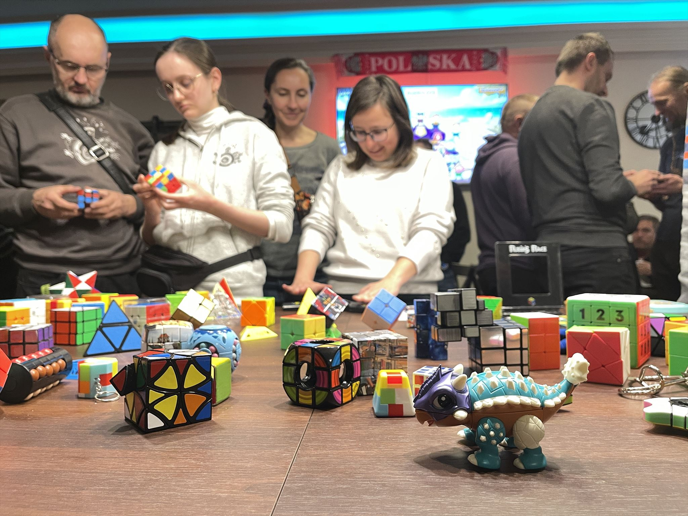

Styczeń
plany, podsumownia, quizy
Nowy rok, nowe sięganie do gwiazd.
GCATKXD 1 stycznia soratte
Nowy rok, nowe sięganie do gwiazd.
GCATKXD 1 stycznia soratte
Krakowskie podsumowanie 2024
GCATNV3 6 stycznia kranfagel & leneia
KSzK
GCB1GGP styczeń - listopad Quard32 & udar2
KSzK
GCB1GGP styczeń - listopad Quard32 & udar2
- Zdobyte szczyty – Wzgórze Krzemionki, Górka Pychowicka, Góra Solnik, Wzgórze Kaim, Kopiec Krakusa, Guminek, Sikornik, Srebrna Góra, Ostra Góra, Wzgórze Rajsko, Pustelnik,
- 11 eventów
- 222 attendy
- 60 keszerów (nicków)
- Najliczniej odwiedzony event GCB52EF – KSzK #6 - Wzgórze Kaim – 27 attendów – 29 wpisów (nicków) w logbooku
KSzK
GCB1GGP styczeń - listopad Quard32 & udar2
Chodź, opowiem Ci o Polsce
GCB1VPR październik 24 - kwiecień 25 Emson_ i inni
Chodź, opowiem Ci o Polsce
GCB1VPR październik 24 - kwiecień 25 Emson_ i inni
- październik 24 - kwiecień 25
- 9 eventów, 4 organizatorów
- 165 attended, 55 nicków keszerskich
- najwyższa frekwencja Qinka, Justyna94, Dominisia_krk (8 z 9)
- Tarnów, Dębica, Ciężkowice, Opole, Bochnia, Zalipie, Pacanów, Mielec, Radłów
Chodź, opowiem Ci o Polsce
GCB1VPR październik 24 - kwiecień 25 Emson_ i inni
🥂🎂🍾Trzecie GeoUrodziny🍾🎂🥂
GCAXHV2 22 stycznia udar2 & Kasia_2014 & Quard32
Kto rano wstaje...
GCAZZC4 30 stycznia Kosoff
GeoPubQuiz 🤔❓
GCB23NB 30 stycznia Emson_
GeoPubQuiz 🤔❓
GCB23NB 30 stycznia Emson_
Eventy
Eventy 2025
Liczba eventów w Krakowie
145
(147 w 2024 r.)
Liczba eventów w Małopolsce
178
(201 w 2024 r.)
CCE 2025
Liczba CCE w Krakowie
23
Liczba CCE w Małopolsce
31
CITO 2025
Liczba CITO w Krakowie
10
Liczba CITO w Małopolsce
14
(12 w 2024 r.)
Wspomnienia z 2025
leneia

2025 był jak...
leneia


j_janus

Największą radością dla mnie jest wyzwalanie energii u ludzi do robienia wielkich rzeczy. Sukcesem społecznym roku 2025 jest wydarzenie Mega - Przygody Keszerka. Aktywnością towarzyszącą był największy w Polsce GeoArt z Lab Cache (będąc w Belgii na Atomium zamarzyłem, żeby stworzyć coś podobnego w Polsce), współtworzenie GeoArt Torcik. Cieszy mnie też Cito kajakowe. Nową inicjatywą na tym terenie jest cykl codziennych eventów grudniowych. Dziękuję Wam!
Prywatnie: publikacja wirtuala Webcam, zagadka 3-D, udział w Giga w Pradze, zdobycie kesza z największą ilością przyznanych rekomendacji na świecie oraz 4 nowe kraje: Szwajcaria, USA, Gwatemala, Kanada. Zobaczyłem też, że mam najczęściej odwiedzanego kesza w województwie, ósmego w Polsce.
Naphilim
W tym roku największe wrażenie zrobił na mnie event w Pradze, gdzie nauczyłem się, że "komu z keszerem w podróż, temu krowa mać large o północy w polu na czeskiej wsi".
Niemniej chciałbym przekazać, że jesteście najpozytywnjejszą grupą szaleńców i chciałbym podziękować, że przygarnęliście młodego i mnie ma doczepkę do waszego grona. Jesteście wspaniali 😀
EkaSyr_Mantis

Początek 2025 roku – konto EkaSyr, znaleziono 140 skrytek.
Koniec 2025 roku – konto EkaSyr&Mantis, ponad 2000 skrytek, zebrany matriks, 19 ukrytych, wędka, kalosze, CITO, MEGA, FTF, brudny samochód, dzieci same w domu i wściekle.
Czy to rodzaj COVIDu geocachingowego?
seba54

Obyło się bez zbytnich szaleństw :)
- milestone 10.000 znalezień celowo na keszu GCA2025 (Where's 25?)
- utrzymanie ciągłości miesięcznych FTF-ów
- w końcu pierwszy awatar, pieczątka i osobisty drewniak
m2mPL

Udało mi się zrobić 10000 kroków podczas doby spędzonej w busie, w trakcie wycieczki o pieszczotliwym tytule 15 krajów w jeden dzień ;P Kosztowało mnie to troszkę krążenia wokół busa na postojach i biegania do keszy, ale udało się :)
Stała się rzecz niesłuchana, byłam świadkiem dwóch historycznych matrixów - elales i kretes i to jednego dnia :) 21 grudnia był dniem cudów :)
GhostDiamond

Ten rok to dla mnie przede wszystkim inspirujące spotkania z ludźmi pełnymi pasji czyli ewenty, cito, Mikołajki i inne, ale jego najpiękniejszym zwieńczeniem stał się grudniowy debiut mojego kesza
"Ulepimy dziś... kesza?" (GCBFYHJ).
To projekt szczególny, bo łączący urodzinową dedykację dla wyjątkowej osoby dla mnie.
Oraz z misją wywoływania uśmiechu na twarzach dzieci niezależnie od sytuacji, w jakiej się znajdują.
GhostDiamond

Luty
pizza, pączusie, pele mele
Czas na pizze
GCB2M0V 7 lutego Zuśka_Kluśka
Czas na pizze
GCB2M0V 7 lutego Zuśka_Kluśka


Pele Mele Quiz - Geocachingowe Złote Myśli Finał
GCAYNWM 13 lutego barucci
Pele Mele Quiz - Geocachingowe Złote Myśli Finał
GCAYNWM 13 lutego barucci
Przegląd gier terenowych #1 🔍🗺️
GCB2TEE 19 lutego Emson_
Czy zjesz ze mną pączusia? 🍩
GCB2TE8 27 lutego Emson_
Kto zakłada eventy?
Założone eventy
Założone eventy (Kraków)
Wspomnienia z 2025
Zuśka_Kluśka
Zalogowałem wszystkie zaległe kesze:)
Ruda_Mała_Mi
Skónczyłam Matrixa, założyłam 2 kesze podczas pobytu w szpitalu w Zakopanem (STF został przyłapany na gorącym uczynku, ale i tak nie znaleźli finału ;)
CopernicusHigh

Spektakularnych osiągnięć brak, ale za to po latach geocacherskiego marazmu wróciłam do zakładania keszy. No i w czasie wakacji dotarłam do pięknego miejsca, gdzie nie było ani pół kesza i zaraziłam geocachingiem lokalnego przewodnika. Efekt: pierwsze kesze czekające tam na publikację i zaktualizowana strona na Wikipedii dotycząca geocachingu w krajach Luzofonii
jodelka

W tym roku bardziej poczułam, że moje podróże, małe i duże, dzięki geocachingowi są ciekawsze.
karibud

Ten rok akurat nie był keszersko wybitny w moim wykonaniu jednak z całą pewnością chwile, które zostaną mi w pamięci to 2000 kesz na giga w Pradze oraz niespodziewane spotkanie z Wami w Rzymie XD
karibud

kretes

Moje najszczęśliwsze wspomnienie z 2025 roku to niespodziewane ukończenie matrixa w bardzo ciekawym miejscu i w przemiłym towarzystwie!
elales

Miałam plan, żeby ze smutkiem wysłać wiadomość, że to był kolejny rok bez matrixa. Jednak okazało się, że geoprzyjaciele zrobili mi nie lada niespodziankę i z wielkim wzruszeniem przyznaję, że to jest rok, w którym ukończyłam pierwszego matrixa.
Marzec
krowy, serki, wizytówki
Wizytówki i certyfikaty 4
GCB358W 1 marca Emson_
Wizytówki i certyfikaty 4
GCB358W 1 marca Emson_
Muuuuszę tu posprzątać
GCB0RE0 2 marca kranfagel
Muuuuszę tu posprzątać
GCB0RE0 2 marca kranfagel
🎲 Planszówkowy event 🎲
GCB3QGX 12 marca Qinka
🎲 Planszówkowy event 🎲
GCB3QGX 12 marca Qinka
Rubik's CCE
GCAW13Y 19 marca Milk_Bandit
Rubik's CCE
GCAW13Y 19 marca Milk_Bandit
 





CITO - Czysta Wisłoka #3
GCB40E7 25 marca Peter_PL
GeoPloty x GeoDebaty - Co z Geocaching Małopolska?
GCB1EEA 26 marca Dominisia_krk
🌖 Spotkanie wielbicieli sera i nocnego nieba 🌒
GCB49CM 27 marca Dominisia_krk
🌖 Spotkanie wielbicieli sera i nocnego nieba 🌒
GCB49CM 27 marca Dominisia_krk
Geocaching Kraków
Grupa na WhatsApp
Liczba członków
72
Liczba wiadomości na Ploteczkach w 2025
8733
Liczba wiadomości (Ploteczki)
Liczba wiadomości (Ploteczki)
Wspomnienia z 2025
zuzix_854

Cały 2025 owocował w mnóstwo super wydarzeń i wspomnień. Z tego roku najbardziej wynoszę ze sobą ogrom wspaniałych skrytek, wspolne nagrywki do GIFFa, oraz oczywiście pamiętną wyprawę po 16 typów :)
ptaki_polski_13

Znalazłem 1000 keszy i udało mi się zdobyć 2 FTFy na Chorwacji i jest to mój piąty rok na geocachingu.
daksya

536 powiatów ze znalezionym keszem w 2025 roku - 19 miejsce w Europie i 25 na Świecie w tej statystyce w tym roku. Przy okazji dokończenie zazielenienia wszystkich powiatów w Polsce.
CopernicusHigh -> daksya
Ja uważam, że szczególne miejsce należy się Daksyi za Dyskografię keszera. Ja słucham tych piosenkę na okrągło, już mnie dawno nic w świecie geocachingu nie obudziło z zimowego letargu, nie rozśmieszyło do łez i nie sprawiło, że znowu mi się chce. Jakiś niesamowity entuzjazm się we mnie obudził od wysłuchania tych radosnych pioseneczek :)
Prezes201

Początkowo jako cel na rok 2025 ustaliłem sobie, żeby ten rok był po prostu lepszy keszowo od poprzedniego, po kilku miesiącach szło na tyle dobrze, że wbicie 10 tysięcy znalezień, również stało się realnym celem, który spełniłem 19 grudnia w Rzymie. W tym roku wpadło około 4,5 tys. znalezień z czego 2,5 tys. nie licząc labów. Udało mi się również skończyć matrixa na lajciku z Emsonem.
Majki_Obbi

W 2025 roku w moich statystykach przybyło ponad 790 znalezień i założyłem wreszcie skrytki w moim rodzinnym mieście Chrzanowie, ale to wszystko nieważne, bo najbardziej cieszy mnie tysiąc pięćset sto dziewięćset uśmiechów, żartów, wygłupów, miłych słów i dobrych wspomnień, jakie zebrałem podczas spotkań z innymi keszerami i keszerkami. Dziękuję!
Piętaszek

w tym roku, największym dla mnie wydarzeniem było zaproszenie mnie na event we Wrocławiu, na którym mogłem powiedzieć kilka słów na temat mojej książki, którą napisałem kilka lat temu ☺️ Bardzo fajnie, że ktoś o tym pamiętał i wyciągnął książkę i przy okazji mnie z otchłani historii 😁 Z tego co kojarzę, była to pierwsza taka publikacja w Polsce, poświęcona w 100% Geocachingowi.
Piętaszek


Kwiecień
znakowanie, jednorożce, piżamki
Święto Tarnowskiej Turystyki 2025
GCAYQA4 5 kwietnia Emson_
Święto Tarnowskiej Turystyki 2025
GCAYQA4 5 kwietnia Emson_
Znakujemy szlak w Szczepanowicach 🖌️🟢
GCB3ZYT 5 kwietnia Emson_
Znakujemy szlak w Szczepanowicach 🖌️🟢
GCB3ZYT 5 kwietnia Emson_
🦄✨ Unicorn Day ✨🦄
GCB2J2G 9 kwietnia UnicornCacherPL
🦄✨ Unicorn Day ✨🦄
GCB2J2G 9 kwietnia UnicornCacherPL
PISANKA
GCB4YTZ 12 kwietnia juleczkap23
PISANKA
GCB4YTZ 12 kwietnia juleczkap23
GeoSlajdowisko 12 - Maroko
GCB3001 14 kwietnia kranfagel & kretes
Kto rano wstaje, temu wschód słońca w piżamie!
GCB2RN5 16 kwietnia Dominisia_krk & mugol_02
Kto rano wstaje, temu wschód słońca w piżamie!
GCB2RN5 16 kwietnia Dominisia_krk & mugol_02
W Rio Leżaneiro zimno, weź piżamę i na zachód wio!
GCB2RN6 16 kwietnia Dominisia_krk & mugol_02
W Rio Leżaneiro zimno, weź piżamę i na zachód wio!
GCB2RN6 16 kwietnia Dominisia_krk & mugol_02
GeoFilmowanie - cz. 1
GCB56QV 16 kwietnia barucci
Ło matko, gdzie was znowu poniosło?
GCB5CYR 22 kwietnia Fishu
Ło matko, gdzie was znowu poniosło?
GCB5CYR 22 kwietnia Fishu
CITO w czwartek
GCB56XX 24 kwietnia soratte
Kesze w Małopolsce
Znalezienia
Znalezienia keszy z 2025
Top kesze 2025 (Wilson)
- GCB59PW Szlakiem Jednorożców |30| Bonus-corn Milk_Bandit 💙18
- GCBEP02 Dębiczanie jadą do Biecza. bojsiu17 💙9
- GCBDAMY Cmentarz wojenny nr 445 w Chrzanowie Majki_Obbi 💙10
- GCBB0VW Wakacje po krako(w)sku - Meksyk 🏜️ Qinka 💙13
- GCB5D1J Bo nie o spacer… #24 - Forteca Anderith 💙18
- GCB2XTT Ukryty Skarb #2 (Wojskowy) GhostDiamond 💙6
- GCBEWNQ HERB BIECZA bojsiu17 💙8
- GCBFYHJ Ulepimy dziś... kesza ? GhostDiamond 💙4
- GCB3MM0 Muuuszę iść na kesza - Wielka Krowa Challenge marcin3243 💙18
- GCBFE17 Dyskografia keszera daksya 💙11
Wspomnienia z 2025
GoGacekGC

Gacek nie zaliczy tego roku do udanych. Definitywne zakończenie działalności Stowarzyszenia Geocaching Małopolska rzuciło cień na radości z keszowania w tym roku. A były to wszelkie spotkania, w szczególności na Szczytach Korony Krakowa, jeden skromny FTF, znalezienie najstarszej skrytki Małopolski i wyjątkowej przygody przy "Festiwalu Nietoperzy" oraz poznanie (także keszowych) ciekawostek Sewilli i Norwegii. Z nadzieją lepszego roku 2026...
GoGacekGC

chrupek_4

W tym roku udało mi się zwiedzić wzdłuż i wszerz całą Skandynawię, a wisienką na torcie było znalezienie najstarszego kesza w Danii "Kippers in the Jungle (Denmark's first)" GC6A
Krecik40

W tym roku odwiedziłem 1 "Nowy Kraj" - Rumunię w którym można było zobaczyć kontrasty architektoniczne oraz zapełniłem kalendarz z wielkością skrytki "inna"
Krecik40

Sandra_Piotr_BUKOWNO

Oprócz letniej wyprawy do Rzymu, podczas której zalogowaliśmy niezliczoną ilość Earthcache'y i Virtuali, 2025 przebiegł głownie w kierunku statystyk. Jest tego bardzo dużo, ale dumni jesteśmy z tej jednej:
W 2025 roku udało nam się zdobyć prawie 200 FTF'ów - kilkadziesiąt więcej niż Kranfagel ;)
Radek06

Generalnie kolejny rekordowy rok pełen mniejszych i większych osiągnięć, ale największą przygodą była chyba wyprawa do Pragi na nasze pierwsze GIGA, gdzie udało się połączyć zbieranie mnóstwa starych i wysoko FAVowanych keszy ze zwiedzeniem niesamowicie pięknego miasta.
PS: Jeszcze raz dziękuję Oli za piękną pieczątkę, którą zrobiła nam na Mikołajki ❤️
wiewiórka500

Ten rok był rokiem wielu podróży i założeń. Odwiedziłem 4 kraje i założyłem 13 keszy!
piechurek7

Najlepiej wspominam wieloosobowe wyprawy keszerów. Niezależnie od organizatora oraz destynacji, zawsze panowała świetna atmosfera, dobra współpraca, a keszowanie dawało wiele radości i dostarczało niesamowitych przygód.
Maj
GIGA, koniec
25 Years of Geocaching – Prague 2025
GCAGGGG 3 maja PragueGigaTeam
Koniec
GCB57AB 6 maja Emson_
Ło matko, gdzie nas znowu poniosło?
GCB7A95 28 maja Dominisia_krk
FTFy
FTFy
FTFy w Małopolsce
FTFy w Krakowie
Wspomnienia z 2025
PL_MASA

2025… sukcesy drzewne, stworzenie grupy keszerskiej w pracy, Giga w Pradze i pierwszy webcam, pierwsze wędkowanie, keszowanie bardzo daleko od domu, geo-przyjaciele z krakowskiej społeczności, mój pierwszy zorganizowany event i… 1600 znalezień
PL_MASA


AsereczeKK

Za nami pierwszy pełny rok keszowania. Rok temu gdy zaczynaliśmy, na podsumowaniu były 62 kesze teraz jest ponad 500, więc idzie do przodu ;) zgarnęliśmy kilka szczególnych dla nas keszy w Kapadocji w Turcji Które mają ponad 20 lat, dziękujemy znajomym keszerom za ten rok. To był super czas!
M&O&P

W tym roku udało nam się ponownie poszerzyć zasięg naszego keszowania, tym razem zdobyliśmy najdalej jak dotąd wysunięty na południe kesz, na Sri Lance, w Tangalle GC5RGTK . Kraj ten nas zachwycił: piękne starożytne stupy, przyroda i dzikie słonie... Naliczyliśmy ich setkę podczas jednodniowego safari 😍.
M&O&P

Qinka

...
Qinka
soratte

Keszowanie krajoznawcze w dobrym towarzystwie, poza ubitymi szlakami. Mołdawia i Azerbejdżan, polecam.
Trusik

Ten rok był bardzo fajny. Jednym z wydarzeń, które zapadło mi w pamięć, było to, że pierwszy raz w życiu bylem na MEGA!
falcon1984pl

- dalsze czerpanie przyjemności i satysfakcji z geocachingu
- skupiam się głównie na keszowaniu po Krakowie i najbliższej okolicy, atakowaniu FTF jesli jest możliwość ;)
- wyjazd kilkudniowy na Geocaching Party 2025 (Warszawa) gdzie zrobilismy z synem ponad 200 pkt z labami
- oprocz tego troche keszowania na Pomorzu podczas majówki i wakacji
Czerwiec
gry, treningi
GeoSlajdowisko 13 - Islandia i ziemia Krośnieńska
GCB6XG3 4 czerwca yuve & Emson_
GeoGraTerenowa 2.0 - Błonia
GCB7ZKW 12 czerwca Chamaneax_PL
Posprzątajmy Radłów!
GCB816D 14 czerwca Kosoff
Trening Keszera
GCB82G7 czerwiec - grudzień Emson_ i inni
Trening Keszera
GCB82G7 czerwiec - grudzień Emson_ i inni
- Rozpoczęcie sezonu, Ćwiczenia na drążku, Pływanie, Joga 2, Bieganie + sztafeta, Kolarstwo, Wspinaczka i dostęp linowy, Disc golf, Kręgle 2, Ping-pong 2, Rugby, TRInO, Twister 2, Skok w dal, Wspinanie po ściance, TempO, Równoważnia, Siłownia zewnętrzna, Morsowanie listopad, Zakończenie sezonu
- 20 eventów
- 4 organizatorów
- 72 uczestników (nicków keszerskich)
- 285 attended
- Wygrał Najlepsi<3
Trening Keszera
GCB82G7 czerwiec - grudzień Emson_ i inni
Statystyki założeń
Założone kesze
Założone kesze
Założone kesze (Kraków)
Założone kesze (multi)
Założone kesze (multi)
H-indeks
Kto ma szansę na virtuala (80)?
1990ds, aforyzm, AN4RHYREAPER_OU7SIDE, Anderith, AniMruMru, AsereczeKK, Bartek_X, barucci, Beata1988, bogna.czechowska, bojsiu17, BoszkipT, daksya, DESANTZŁY, DJSmutny, Doctor_on_bike, Einsztein27, EkaSyr_Mantis, elales, Emson_, Fishu, Gabciazabciaa14, Gabrioo, Geryint, GhostDiamond, GosiaRafcio, gryfuse, Hiszpania145, holoskawina, i85q, Kacperek1233, karmati, Karton0, Kasia_2014, Kasiamesje, kluczdoskarbu, Kosoff, kranfagel, Krecik40, Krzosz, leneia, luckyman_pl, lysyczesio, m2mPL, Majki_Obbi, marcin3243, Martynka371, Milk_Bandit, najlepsi<3, nemrodek, NINJA_Pro_12, Perla09, piechurek7, Piętaszek, pocztapp, Pogliś, ptaki_polski_13, qba_sam, Qinka, Quard32, Radek06, renateira, sabatara123, Sandra_Piotr_BUKOWNO, seba54, soratte, stara_baba, Sylvins, Team_SirWonski, TSManiusRKS2115, Tutmozis, Tymek234, TymsonStef, udar2, UnicornCacherPL, wiewiórka500, wojtekm462, WUJCIAS, xe_vis, xMt
Wspomnienia z 2025
hedonic

Spontaniczny wypad na Giga do Pragi, zorganizowanie czterech eventów w czterech krajach (Indie, ZEA, Tajlandia i CCE w Kambodży z okazji mojego 15lecia dołączenia do grona keszerów, z tej okazji konsumowaliśmy suszone owady i owoce lotosu).
bezsenna

Z tego roku najlepiej wspominam event, na którym był sam papież Leon XIV :) W tłumie ludzi nie znalazłam keszerów z eventu, ale za to gość honorowy dwukrotnie przejechał swoim papamobile po placu św. Piotra.
bezsenna

najlepsi<3

myślę że 2025 rok był rokim, w którym udało się wiele. Było wiele wyjazdów, w końcu padł matrix, później drugi i trzeci(!). Nie wykluczone, że padnie jeszcze czwarty. Udało mi się odwiedzić 5 krajów, zrobić ciągłość (trwa nadal!), może uda się dobić do 2000 znalezień.
Wiele się działo, wiele świetnych keszy i eventów, wiele wspomnień i sytuacji, które na pewno zostaną ze mną na dłużej:)
Pogliś

zastanawialiśmy się co najlepiej wybrać na ten nasz slajd i chyba ze stricte keszowych osiągnięć to pierwsze Giga, pierwsze BlockParty i pierwszy GPS Maze (czy jak mu tam). A poza tym no to najważniejsze w tym roku było powiększenie się składu Poglisia :)
xMt

wyjazd na kilka dni na Słowację, żeby załapać się na event "2025 CCE : MISSION (IM)POSSIBLE" (GCAXHF7), pierwsze moje wydarzenie w tym pięknym kraju.
pocztapp

W 2025 roku udało mi się wcielić w życie projekt Wielicki tour z 29 multakami wokół Wieliczki, który pokazuje różnorodność tego regionu i przemianę obyczajową na podkrakowskiej wsi.
hejgosia

Przeżyłam kolejny rok jako żona keszra! Przy tej okazji poznałam wiele ciekawych i mniej ciekawych miejsc :)
Lipiec
pikniki, kąpiele, bransoletki, zawody
GeoSlajdowisko 14 - Barcelona
GCB94K4 10 lipca Emson_
Celebrating 20 years with Team PodCacher (PIKNIK)
GCB7778 14 lipca kranfagel & leneia
Celebrating 20 years with Team PodCacher (PIKNIK)
GCB7778 14 lipca kranfagel & leneia
Środek Wakacji
GCB9FZ0 22 lipca soratte
DIY: zróbmy sobie wakacyjne bransoletki
GCB9N3M 23 lipca Qinka
DIY: zróbmy sobie wakacyjne bransoletki
GCB9N3M 23 lipca Qinka
GeoSlajdowisko 15 - Austria, Singapur, Malezja, Indonezja
GCB9999 24 lipca kranfagel & leneia
Log & Roll 2025
GCB1Y11 26 lipca kranfagel & leneia & marcin3243
Log & Roll 2025
GCB1Y11 26 lipca kranfagel & leneia & marcin3243

Piknik urodzinowy - jak te 10 lat zleciało!
GCAW0G1 31 lipca Dominisia_krk
Piknik urodzinowy - jak te 10 lat zleciało!
GCAW0G1 31 lipca Dominisia_krk
Podróże
Odwiedzone kraje
Odwiedzone regiony
Odwiedzone powiaty
Odwiedzone powiaty (PL)
Wspomnienia z 2025
MaryKisiek

Narysowałam logo krakowskiej społeczności keszerskiej wg pomysłu pocztappa. Cieszę się, że to właśnie ten projekt zyskał Wasze uznanie i będziecie go dumnie nosić na Waszych strojach.
marcin3243

znalazłem partnerkę życiową, która jest keszerką :)
dadadsfasd

Dębica on tour, bardziej rodzinną częścią czyli belka27, buryas, qauuasznik, FrFr77 i dadadsfasd, USA wrzesień/październik 2025. przejechaliśmy 10000km od Chicago do Sedony i z powrotem, odwiedzając łącznie 13 stanów. wpadło trochę starych keszy z 2000 roku, w tym aż 3 z maja, przede wszystkim MINGO (GC30), czyli najstarszy aktywny kesz, a siódmy w ogóle, który jest nawet zaznaczony na google maps i ma swoją tablicę informacyjną, oraz jedyny na świecie kesz z atrybutem kaktus, znajdujący się w lesie w stanie Wisconsin gdzie nawet nie ma kaktusów😁. oprócz tego przeżyliśmy masę przygód, tych keszerskich i nie tylko.
dadadsfasd


Kosoff

Udało mi się znaleźć kesza na wysokości ponad 5000 metrów
Udało mi się zamknąć liste znalezień keszy w każdym z krajów UE
Svarträv

Rok 2025 upłynął pod niemal wyłącznym znakiem nietypowych eventów - z okazji 25-lecia GC udostępniono możliwość zmiany Mega- i Gigaeventów w Block Party oraz rozdano eventy CCE i to właśnie ich szlakiem podążałem przez ostatnie 12 miesięcy.
W tym roku odwiedziłem:
-Block Party w 7 krajach co dało miejsce 1. w Małopolsce i ex aequo 1. w Polsce (chyba, że Wiesia.K była w Holandii i jeszcze nie zalogowała tego wyjazdu)
-GPS Maze w 3 krajach co dało miejsce 1. w Małopolsce i 1. w Polsce
-Mega Eventy w 3 krajach co dało miejsce ex aequo 2. w Małopolsce i ex aequo 2./3. (zależy jak liczyć) w Polsce (Gratulacje dla Najlepsi<3)
-CCE w 7 krajach co dało miejsce 1. w Małopolsce i ex aequo 2. w Polsce
-CITO w 4 krajach co dało miejsce ex aequo 1. w Małopolsce i ex aequo 3. w Polsce
Co ciekawe tylko pierwszy z tych podpunktów był celowy - resztę uświadomiłem sobie dopiero teraz patrząc w statystyki. Co więcej na wszystkie te osiągnięcia wykorzystałem 1 (słownie: JEDEN) dzień urlopu, całą resztę zamykając w wyjazdach weekendowych.
Fishu

Z 2025 najlepiej będę wspominał wszystkie Lajciki Z .. i spotkania, w tym niezapomniany EKA i pobudki o 1, 2 ,3 - no i 4-tej nad ranem :)
Z osiągnieć warte odnotowania białą kredą na kominie:
1-wszy nasz Jasmer - zamknięty wraz z m2mPL na GC4D Match Stash 7 czerwca 2025 , w miłym towarzystwie Piotr i Agnieszka Daksya oraz Michał Barucci!
13 najstarszych keszy w 13 krajach w 2025 (w sumie 21 najstarszych)
10 000 keszy na liczniku (niestety z labami)
15 Krajów w jeden dzień, oj co to była za wyry..prawa, była nawet kawa :)
15 Typów w jeden dzień , tak wiem macie więcej o jeden :P
O liczbie odwiedzonych krajów nie będę wspominał, bo w grudniu zostaliśmy odsadzeni przez jakiegoś Żurawia :P
Jeśli 2024 był niezapomniany, to co tu powiedzieć o 2025 ?
1990ds

W końcu się przełamałem i zorganizowałem event! Na razie na wyjeździe, ale i na Kraków przyjdzie czas.
Sierpień
gwiazdki, debaty, WWFM
Morskie opowieści - CCE
GCAYP9A 2 sierpnia xMt
Morskie opowieści - CCE
GCAYP9A 2 sierpnia xMt
𝕊𝕫ℤ𝕫𝔸𝕝𝕠𝕆𝕠𝕟𝔼 𝕀𝕆 𝕝𝕒𝕥 😉
GCB9C8F 3 sierpnia Einsztein27
Juraidy 2025, czyli Idzie niebo ciemną nocą CCE
GCATN5B 9 sierpnia CopernicusHigh
Juraidy 2025, czyli Idzie niebo ciemną nocą CCE
GCATN5B 9 sierpnia CopernicusHigh
Jurajskie Sprzątanko
GCBA1K7 20 sierpnia Milk_Bandit
Jurajskie Sprzątanko
GCBA1K7 20 sierpnia Milk_Bandit
IV GeoDebaty
GCBB12W 21 sierpnia barucci
WWFM XXII - na galowo
GCAWWFM 23 sierpnia kranfagel & leneia
WWFM XXII - na galowo
Koniec Wakacji
GCBBEGM 29 sierpnia soratte
Uczestnictwo w eventach
Attendy
Attendy (Kraków)
Attendy (Block Party)
Attendy (CCE)
Wspomnienia z 2025
Krzosz

Był to słaby keszersko rok. Uśredniając niewiele ponad 100 znalezień na miesiąc.
kluczdoskarbu

Za moje największe w tym roku osiągnięcie uważam to, że udało mi się ukończyć pierwszego, drugiego a nawet trzeciego matrixa!
dadoskawina

Świadomym osiągnięciem, które mnie bardzo ucieszyło jest skompletowanie powiatów w Czechach. (można dodać, że jako pierwszy, i jak dotąd - jedyny - gracz z Małopolski :) )
A jako pierwszy w Polsce osiągnąłem 111 CITO, co pozwoliło mi zdobyć FTF-a na challengu we Wrocławiu :)
Statystyki powinienem mieć dostępne, aczkolwiek nie mam ciekawych, więc nawet nie musisz zaglądać.
dadoskawina

Dominisia_krk

A co tam 153 eventy w tym roku. Liczby to liczby. Mnie najbardziej cieszy, że nasza społeczność dobrze się ma, rozwija i widać to jeszcze wyraźniej niż w zeszłym roku. Dzięki Wam! :)
barucci

Moim największym geocachingowym osiągnięciem w 2025 był krakowski film GIFFowy, w którym wystąpił każdy, dosłownie każdy, kto chciał się zaangażować - drugorzędne, że sam film trafił do finałowej rolki Geocaching International Film Festival ;)
aforyzm

To co mi się udało w tym roku to w końcu przekroczenie magicznego progu 1000 znalezień. Co prawda liczę z LABkami, bo bez nich jeszcze trochę mi brakuje, ale i tak bardzo cieszę się z tego mojego małego sukcesu.
Milk_Bandit

Założenie geoarta jednorożca.
Znalezienie półtora tysiąca keszy.
Znalezienie 15 typów w niecałe 4 godziny.
Przekroczyliśmy 100 założonych keszy.
Wrzesień
pocztówki, ogniska, bule
Buła (krowa) ser i bule ;P
GCB0Y8D 20 września m2mPL
Buła (krowa) ser i bule ;P
GCB0Y8D 20 września m2mPL
2 w 1: Pocztówkowe CITO w kamieniołomie!
GCBCTZ3 28 września barucci
2 w 1: Pocztówkowe CITO w kamieniołomie!
GCBCTZ3 28 września barucci
Ognisko z okazji
GCATMMZ 30 września dadoskawina
Quality Geocaching
Top FP
Top MD
Wspomnienia z 2025
POKEMISTRZ
Rok 2025... Geocachingowo przełomowy! Zrobienie ciągłości, zamknięcie pierwszego matrixa, dwa nowe kraje, kesz z 2000 roku, 2x block party, a także pierwszy MoM w terenie, a przede wszystkim mnóstwo świetnych wspomnień podczas eventów czy wyjazdów! To był świetny rok!
UnicornCacherPL

Zorganizowanie pierwszego eventu o jednorożcach.
Założenie pierwszego kesza w Artystycznym Ogrodzie Krakowian.
Znalezienie tysięcznego kesza.
TomekS1976

Największym sukcesem TomkaS1976 był fakt, że na organizowany przez niego event (GCB5386) pierwszy raz przyszedł ktoś poza nim samym.
Emson_

Osiągnięciem keszerskim, które uważam za najważniejsze w 2025 roku, jest najwięcej opublikowanych eventów w Polsce.
pigeox69

Najbardziej, jak zawsze, cieszą nas zdobyte FTFy. W tym roku udało nam się zalogować ich najwięcej spośród wszystkich polskich keszerów.
holdasy

To blył Mega rok. Ba, to był nawet GIGA rok!
Wpadłem w Matriksa po 15 latach a rodzina zaczyna coś mówić o nałogu...
I pamiętajcie - po pierwsze: Laby to ZUO, po drugie: na pohybel smutasom.
Team_SirWonski

Bawimy się dalej i poznajemy nowych keszerów. W tym roku zorganizowaliśmy 1 swój event USTRZEL SOBIE ŚNIADANIE i puściliśmy małą serię ODLOT
Do zabawy włączył również Hiszpania 145, który sam już zakłada swoje skrzynki i ambitnie szuka nowych keszy.
Październik
ziemniaki, drezyny, skrajności
Postcard Day w Krakowie
GCBCE9Z 1 października m2mPL
Postcard Day w Krakowie
GCBCE9Z 1 października m2mPL
Czy my w końcu zjemy tę kiełbasę?
GCB3K0N 9 października kranfagel
#Skrajności Krakowa
GCBA1HK październik - listopad najlepsi<3
#Skrajności Krakowa
GCBA1HK październik - listopad najlepsi<3
- 7 eventów w części geograficznej, w sumie 52 attended, uczestnictwo we wszystkich Dominisia_krk. Najliczniejszy event i ogólnie najlepsze warunki - #Skrajności - Południe (12)
- 4 eventy w części historycznej, w sumie 41 attended, Najliczniejszy event - #Skrajności - Rynek Podgórski (16)
#Skrajności Krakowa
GCBA1HK październik - listopad najlepsi<3
Płonie ognisko i szumią knieje
GCB1Y6H 13 października Quard32 & udar2
Płonie ognisko i szumią knieje
GCB1Y6H 13 października Quard32 & udar2
Wybieramy naszą barwę - logo Geocaching Kraków
GCBARWA 15 i 29 października kranfagel & leneia
Wybieramy naszą barwę - logo Geocaching Kraków
GCBARWA 15 i 29 października kranfagel & leneia
2025 CCE: Od kiedy ziemniaki to dobre wieści?
GCB0YRA 18 października leneia
2025 CCE: Od kiedy ziemniaki to dobre wieści?
GCB0YRA 18 października leneia
✨ Magiczne Geourodziny – 12 lat przygód ✨
GCAYQAR 21 października Qinka
✨ Magiczne Geourodziny – 12 lat przygód ✨
GCAYQAR 21 października Qinka

CITO - 🍂 Jesień 2025 🍂
GCBDT89 25 października Peter_PL
CITO - 🍂 Jesień 2025 🍂
GCBDT89 25 października Peter_PL
25 lat geoachingu - ponownie na drezynach
GCATKNH 26 października nemrodek
25 lat geoachingu - ponownie na drezynach
GCATKNH 26 października nemrodek
Stare kesze
Znalezione stare kesze (<2005)
Znalezione miesiące (Jasmer)
Wspomnienia z 2025
nemrodek

Znalazłem cache w 3 ostatnich brakujących województwach
kingagren22

Powrót do keszowania, po dosyć długiej przerwie. W sumie 453 znalezienia, plus te czekające na lepsze czasy... czytaj chęć, czas i motywację do zostania zalogowanymi. Dwa Mega jednego roku, dla mnie kompletna nowość. Współtowarzyszenie przy organizacji geologicznego eventu na górze Świętej Anny. Było super! Chętnie bym to powtórzyła 😊 To był dobry rok!
juleczkap23

byłam w Pradze na swoim pierwszym GIGA i GPS Maze,
byłam na odsłonięciu krasnala keszerka we Wrocławiu,
byłam na geocaching party w Warszawie,
byłam na pierwszym evencie w Kolbuszowej,
sama zorganizowałam eveny PISANKA i dzień przed podsumowaniem będzie event MORS CCE 2025
Listopad
GIFF, pyszności, lasery, quiz
Kamieniołom Mydlniki v4
GCBC1T1 11 listopada kranfagel & Dominisia_krk & marcin3243
GIFF 2025 Kraków - CCE
GCATNGB 12 listopada daksya & kranfagel
GIFF 2025 Kraków - CCE
GCATNGB 12 listopada daksya & kranfagel
GIFF 2025 Kraków - CCE
Słoiki
GCBAZAT 14 listopada kranfagel & leneia
Słoiki
GCBAZAT 14 listopada kranfagel & leneia
GeoPubQuiz 2 🤔❓
GCATNN8 21 listopada Emson_
GeoPubQuiz 2 🤔❓
GCATNN8 21 listopada Emson_
Nocne polowanie na wiązkę lasera z satelity ICESat
GCBDWWX 21 listopada zucharek
Nocne polowanie na wiązkę lasera z satelity ICESat
GCBDWWX 21 listopada zucharek
GEOrientuj się pod Drabożem
GCAW085 23 listopada seba54
GEOrientuj się pod Drabożem
GCAW085 23 listopada seba54
CITO we wtorek
GCBF6HN 25 listopada soratte
🎊 CCE - Świetujemy i wspominamy 🎉
GCATNMJ 25 listopada Peter_PL
15 lat minęło - 2025 Community Celebration Event
GCAVZQ5 26 listopada Fishu & m2mPL
15 lat minęło - 2025 Community Celebration Event
GCAVZQ5 26 listopada Fishu & m2mPL
Międzynarodowy Dzień Ciasta 🥧🎂🍰
GCBECR0 27 listopada Emson_
Kącik statsiarza
Liczba zdjęć
Top D+T / day
Najlepszy miesiąc
% Krakowa
Wspomnienia 2025
Liczba wspomnień
68
Wspomnienia z 2025
emode

kryzys egzystencjalno-multiakowy, na początku roku;
samotne keszowanie z drabiną, oficjalnie bezpieczniejsze niż chodzenie po prostym w gumiakach;
toyota aygo to padaka, ale z jakiegoś powodu robi wszystkie powiaty w pierwszym kraju;
oraz sezon, w którym "jakość, a nie ilość" wchodzi tylnymi drzwiami, bo na ilość zwyczajnie nie starczyło czasu
kranfagel

pierwsza samodzielnie zdobyta drzewna T5
Grudzień
urodzinki, debaty i erfy
Majki kończy 10 (geo)latek
GCBFCB7 1 grudnia Majki_Obbi
Majki kończy 10 (geo)latek
GCBFCB7 1 grudnia Majki_Obbi


EKA
GCBFEEX grudzień Dominisia_krk i inni
EKA
- 23 eventy tradycyjne i 2 CITO towarzyszące
- Indywidualnych logów w serii EKA pojawiło się 344 = średnio przypada 15 uczestników na event + osoby towarzyszące
- Najmniej liczny okazał się EKA 9 przy ulicy Świerkowej - przyszło 8 osób
- Najlepszą frekwencją cieszyły się aż trzy eventy: EKA 16 przy ulicy Rybnej, EKA 20 przy ulicy Świętej Rodziny i EKA 22 przy placu Mariackim. Na każdym pojawiło się 21+ osób, a na jednym nasz lokalny recenzent. :)
- Aż dwie osoby uczestniczyły we wszystkich spotkaniach. Tego wyczynu dokonali m2mPL i emode 🎉
EKA
- Po evencie i CITO przy przy Rybnej przytrafiło się złapać psiego zbiega w centrum, choć nie obyło się w tej misji bez przeszkód. Gabi została odwieziona do schroniska i niedługo wróciła do swoich właścicieli, więc mamy szczęśliwe zakończenie
- Kontynuując psi wątek, na trzech eventach pojawiła się możliwość poznania młodszego brata Psikusa 🐶
- Zostało wydrukowane 40 kalendarzy i tyle też się rozeszło. Naklejek w przybliżeniu zostało wydrukowane 450 :)
- Za malunki w logbooku głównym odpowiedzialne były 3 osoby: m2mPL, Dominisia_krk i Qinka
- Nieprzekładalne na liczby było wspaniałe zaangażowanie i mobilizacja społeczności w ten projekt ❤️
Dzień naftowca i gazownika 🔥
GCBEZRT 3 grudnia Emson_
Jak być żoną keszera
GCAXHG0 5 grudnia Iluminatornia
🎅🏻Mikołajki z Gwiazdką 🤩 2025 CCE
GCB0YRN 5 grudnia Gwiazdeczka_
Zróbże sobie szopkę
GCATN3C 7 grudnia Pogliś
Zróbże sobie szopkę
GCATN3C 7 grudnia Pogliś
Mikołajki 🎅
GCBCHCE 7 grudnia kranfagel & leneia
Mikołajki 🎅
GCBCHCE 7 grudnia kranfagel & leneia